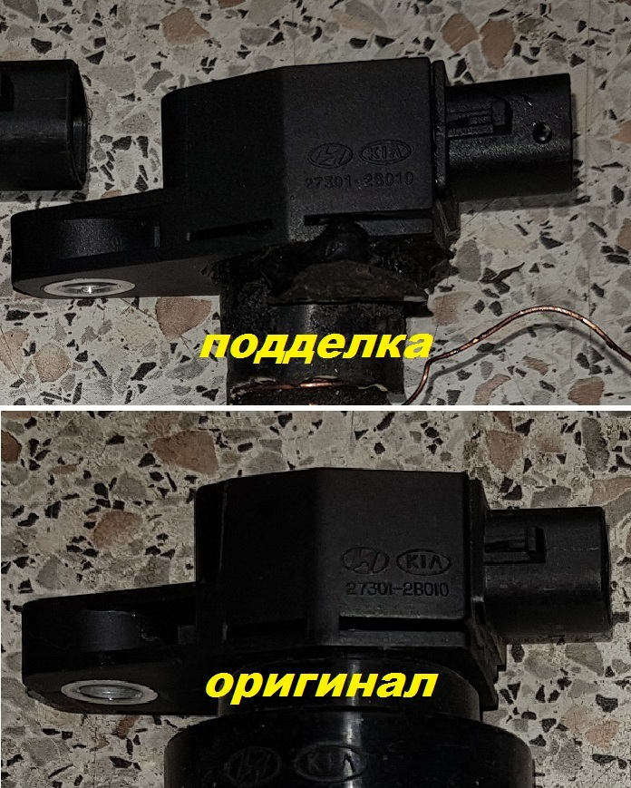
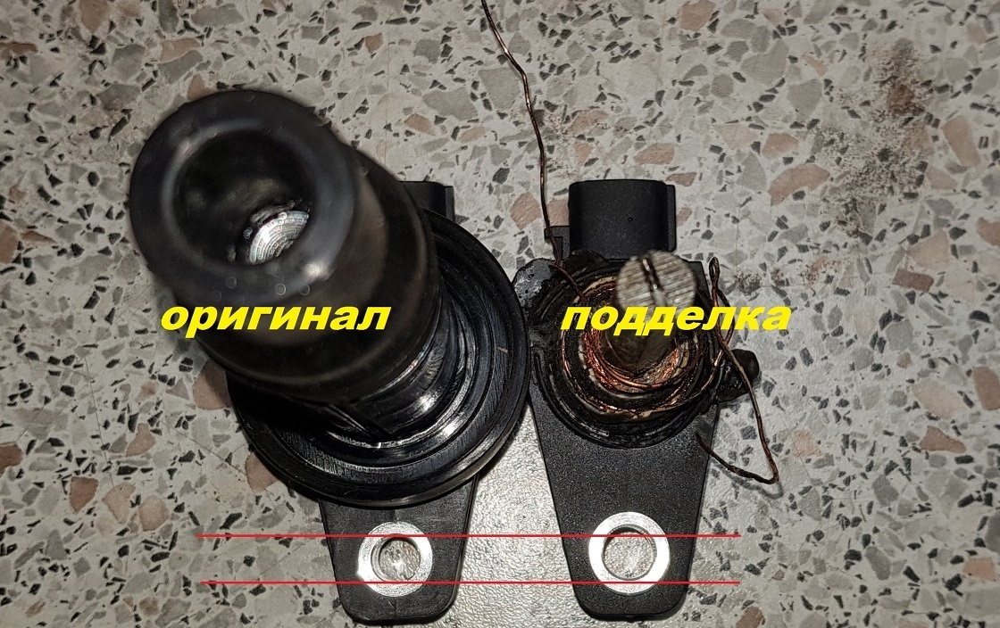
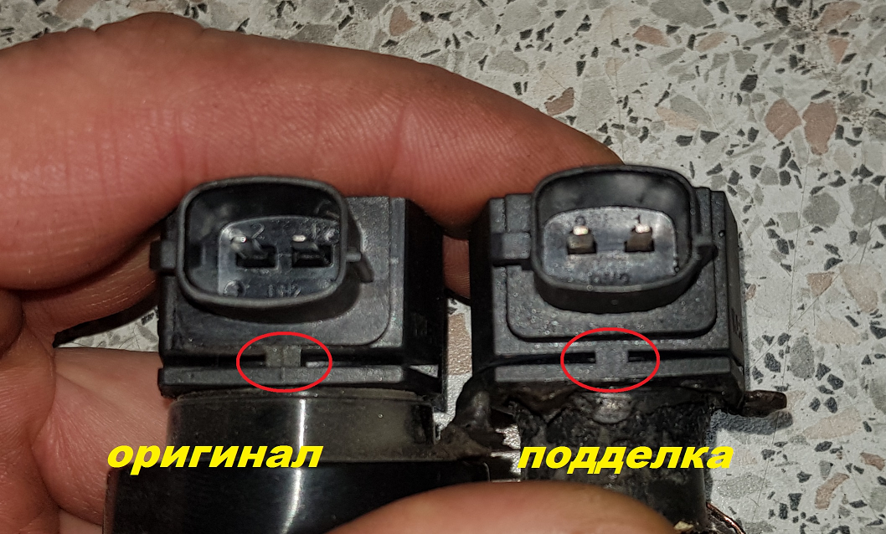

27.10.2019
К нам ,в мастерскую, часто обращаются с проблемой " троит мотор" , а за последнюю неделю сразу три а/м бренда Hyundai-Kia с одной и той-же проблемой : неисправность катушки зажигания. Причём выход из строя сопровождался небольшим взрывом катушки зажигания и последующим выходом из строя блока управления двигателем.
Невольно мы озадачились причиной данной неисправности и выяснили три основных причины :
1. Неисправная свеча зажигания ( большой зазор , нагар, механический дефект ).
2. Короткое замыкание управляющего провода катушкой зажигания на массу двигателя ( что бывает очень редко и в основном из-за не квалифицированного вмешательства в проводку моторной косы ).
3. Некачественная катушка зажигания . Это самая распространнённая причина , о чём и расскажем подробнее:
Естественно много владельцев а/м пытаются сэкономить на запчастях и покупают не оригинальные катушки зажигания , а выбор падает в основном на Китайского производителя среди них часто " горят " катушки зажигания бренда "ERA" , хотя и остальной ассортимент аналогов оставляет желать лучшего . Но владелец , покупая аналог , сам делает выбор и сознательно идёт на риск . Гораздо хуже когда , для любимого авто , владелец покупает исключительно оригинальную запчасть ,а она оказывается подделкой... И вот именно подделка катушки зажигания :

Конечно , пока нет рядом оригинальной упаковки , трудно судить о происхождении . Но этот экземпляр - фэйк !

У подделки качество пластика более шероховатое и немного отличаются цифры каталожного номера.

Разный диаметр отверстия крепления катушки зажигания ( у подделки больше ).

Кроме наличия полосы отлива ,на оригинальной катушке зажигания , видно разную толщину прорези и качество исполнения контактов катушки зажигания.Будте бдительны , при выборе и покупке запчастей !